During the Buwan ng Wika event, I realized how important it is to value and preserve our Filipino language and culture
because it helps us understand who we are as a people. I can apply this by using Filipino more often in my daily life
and by learning about different traditions and languages in our country. I actively participated by wearing traditional clothes
and enjoyed supporting my classmates during the activities. If I were to explain this to a classmate, I would tell them
that Buwan ng Wika is not just about speaking Filipino, but also about celebrating our culture and being proud of our heritage.
Events like this are important because they make learning more fun, help us practice what we learn in school,
and bring students together to appreciate our shared culture.
🍏 Intramurals
During the Intramurals event, I learned the importance of teamwork, sportsmanship, and staying active. I can apply this
by cooperating with others in group activities, encouraging my friends, and practicing discipline both in sports and in daily life.
I actively participated by buying our team jersey and gave my best to support my team. If I were to explain this to a classmate,
I would say that Intramurals is a school event that helps us develop physical skills, build friendships,
and learn how to work together as a team. Events like this are important because they make school life more enjoyable,
promote healthy competition, and teach valuable life skills such as teamwork, perseverance, and responsibility.
🔬 Science Month
During the Science Month event, I learned the importance of science in our daily lives and how it helps us solve problems
and understand the world better. I can apply this by being curious, asking questions, and using scientific knowledge in everyday situations,
like recycling, conserving energy, or conducting simple experiments at home. I actively participated by answering a test for quiz bee
and shared ideas with my classmates. If I were to explain this to a classmate, I would say that Science Month is a celebration
that encourages learning, discovery, and innovation, showing us how science impacts our lives. Events like this are important
because they make learning fun, inspire creativity, and help students develop critical thinking and problem-solving skills.
📚 AP Month
During the Araling Panlipunan (AP) Month event, I learned the importance of understanding our history, culture, and government,
and how they shape our society today. I can apply this by being more aware of current events, respecting our heritage,
and practicing responsible citizenship in my community. I actively participated by answering a test for quiz bee and shared my knowledge
with my classmates. If I were to explain this to a classmate, I would say that AP Month is a celebration that helps us appreciate our history,
culture, and civic duties, and encourages us to be responsible and informed citizens. Events like this are important because
they make learning meaningful, strengthen our sense of identity, and inspire students to contribute positively to society.
👩🏫 Teacher's Day
During the Teacher’s Day celebration, I learned the importance of showing gratitude and appreciation to our teachers for their guidance,
patience, and dedication. I can apply this by being respectful, listening attentively in class, and expressing thanks to teachers not just
on special occasions but every day. I actively participated by preparing with my classmates and celebrated alongside my classmates to honor our teachers.
If I were to explain this to a classmate, I would say that Teacher’s Day is a special event to recognize the hard work and sacrifices of our teachers,
reminding us to value education and the people who guide us. Events like this are important because they promote respect, gratitude,
and a positive school environment.
🤝 Cluster Meet
During the Cluster Meet, I learned the importance of collaboration, sharing ideas, and learning from students and teachers from other schools.
I can apply this by working well with others, being open to new perspectives, and applying the knowledge and skills I gain in school projects and activities.
I actively participated by cheering my school and interacted with other participants to exchange ideas.
If I were to explain this to a classmate, I would say that a Cluster Meet is an event where students from different schools come together to compete,
learn, and collaborate, helping us improve academically and socially. Events like this are important because they encourage learning beyond our own classroom,
develop teamwork and leadership skills, and create opportunities to learn from others.
🎉 More Event Highlights
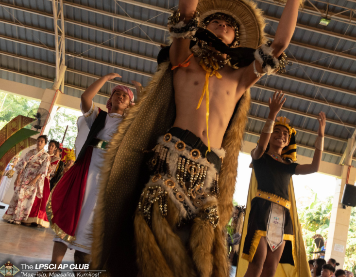
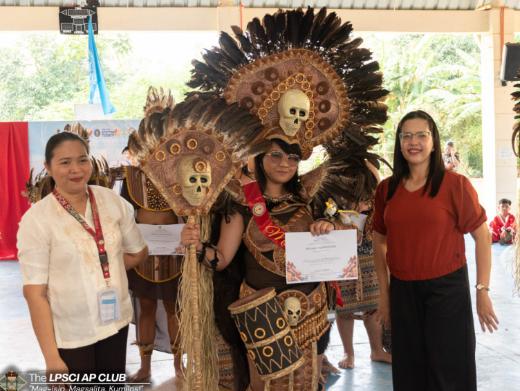
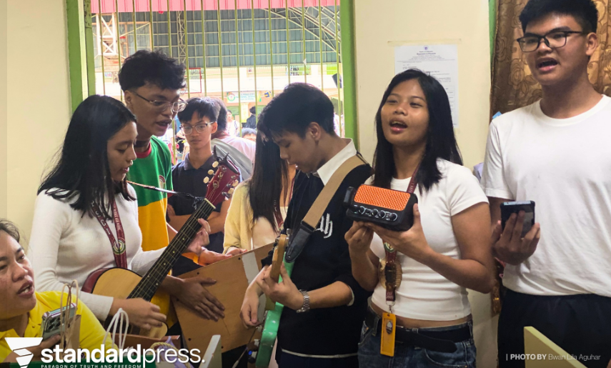
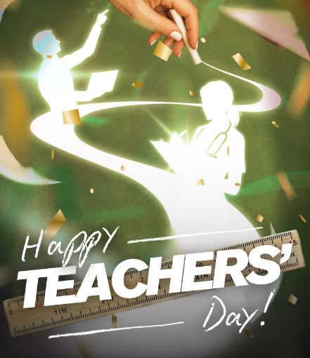
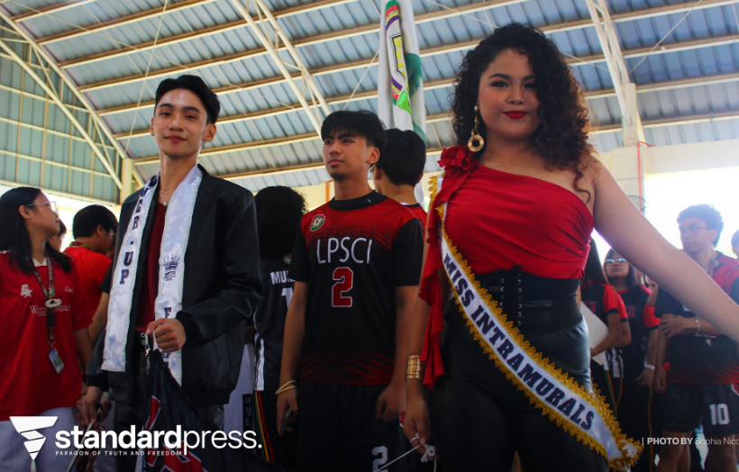
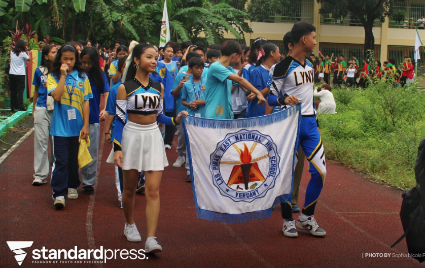
📸 3RD Quarter School Events Gallery
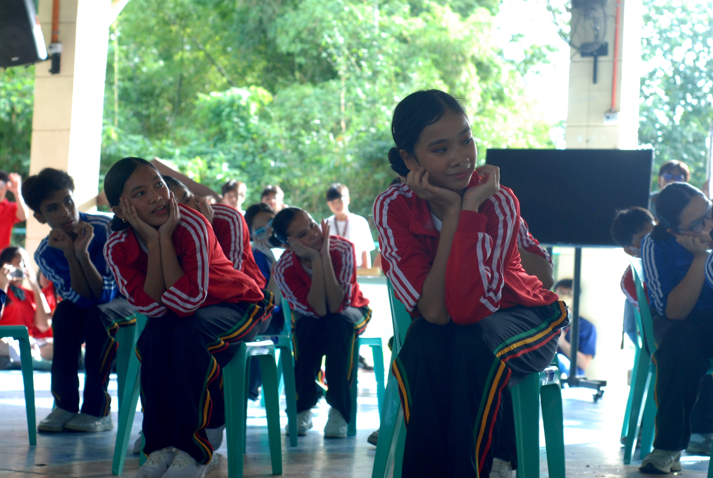
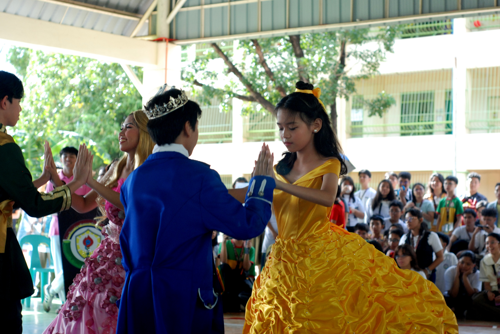
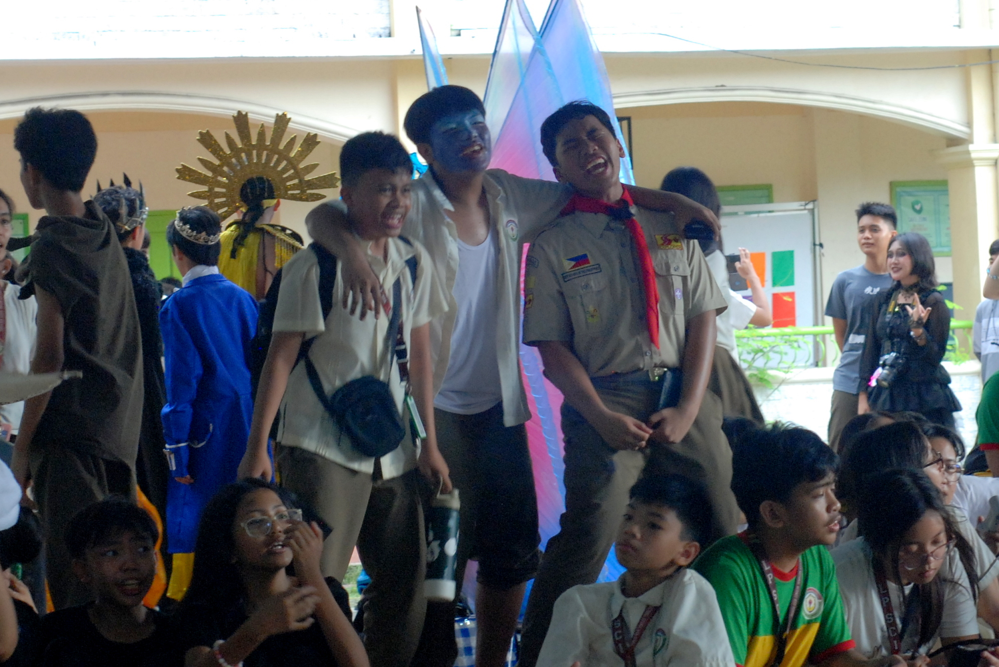
🍎 V-POP
Attending the VPop event was a real eye-opener for me. I learned that music doesn't have to be loud or rebellious to be powerful; instead, it can be a tool for intentional connection. Seeing how the artists blended catchy pop melodies with messages of integrity and social responsibility made me realize that my generation is truly hungry for substance. It was inspiring to see a "pro-social" movement feel just as modern and exciting as any mainstream concert, proving that we don't have to sacrifice style to stand up for our values.
On a personal level, the event reminded me of the importance of community and bayanihan. Watching people from all walks of life come together to support local talent showed me that art is at its best when it acts as a bridge. I walked away feeling more mindful of the media I consume and more motivated to lead with kindness in my own life. It wasn't just about the music; it was about realizing that choosing to be a positive influence is one of the most impactful things I can do.
🍏 Booklandia
Attending Booklandia was a powerful reminder that every book is an open door to a new perspective. Walking through the event, I realized that reading isn't just a solitary act; it’s a way to build empathy and curiosity. I learned that by exploring different genres and stories, I can better understand the lived experiences of people completely different from me, which is a lesson in staying open-minded and grounded in my own community.
On a more personal level, the event made me deeply appreciative of Filipino literature and creativity. Seeing so many local authors and fellow readers gathered in one space showed me that our stories are vibrant and essential. It taught me that being a "reader" is about more than just finishing a book—it's about participating in a culture of lifelong learning. I left the event feeling inspired to be more intentional with my time, choosing stories that challenge me to grow rather than just those that are easy to read.
🔬 Math Month
Participating in Math Month completely changed how I look at numbers and equations. I used to think of Math as just a set of rigid rules to follow, but this event showed me that it is actually a universal language of logic and creativity. Whether we were solving complex puzzles or seeing how geometry exists in the world around us, I learned that Mathematics is about much more than just getting the right answer—it’s about the process of critical thinking and the persistence required to tackle a difficult problem.
On a personal level, Math Month taught me the value of resilience and collaboration. Working through challenges with my classmates reminded me that even the most intimidating "limit" or "derivative" becomes manageable when you approach it with a steady mind and a bit of teamwork. I realized that the discipline I use to solve a math problem is the same discipline I can apply to any challenge in life. I walked away feeling more confident in my ability to think analytically and more appreciative of how math silently powers everything from the technology we use to the structures of the buildings we live in.
🎉 More Event Highlights
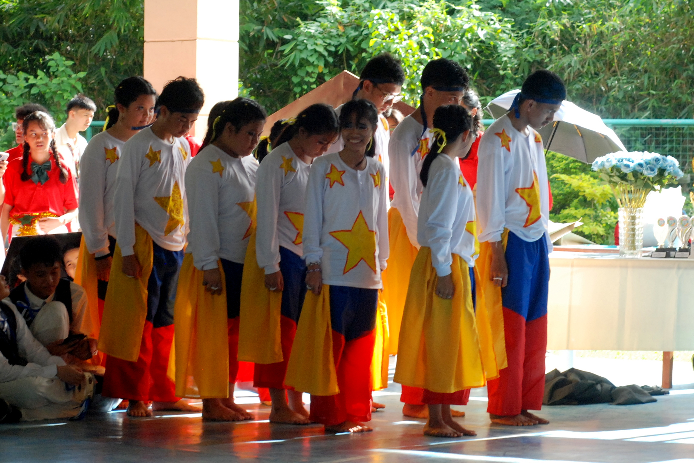
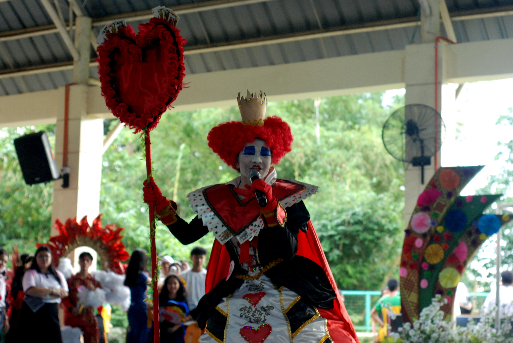
📸 4TH Quarter School Events Gallery
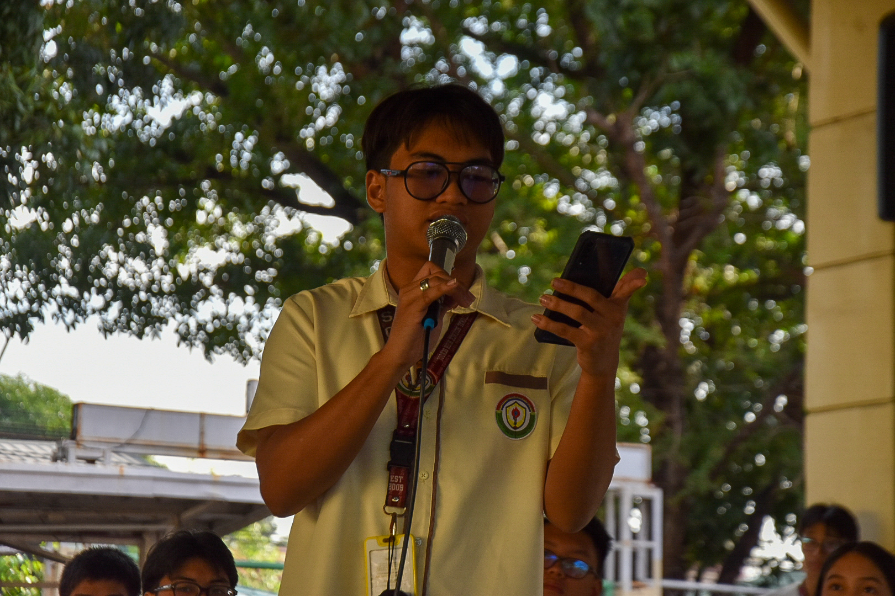
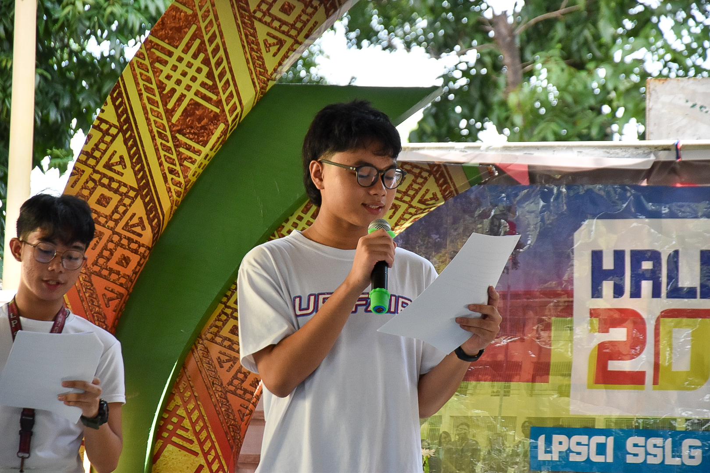
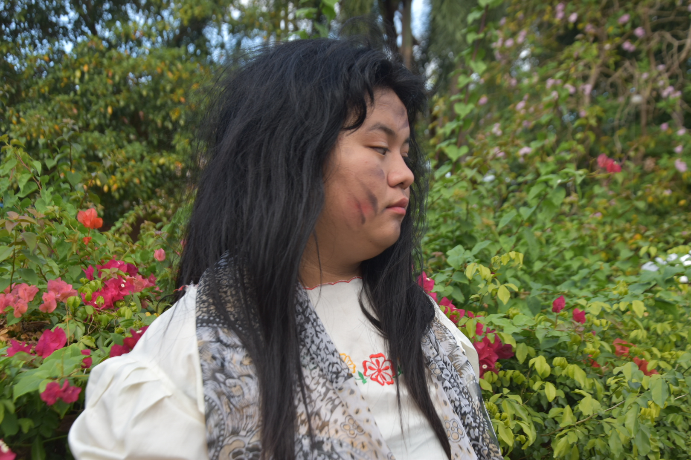
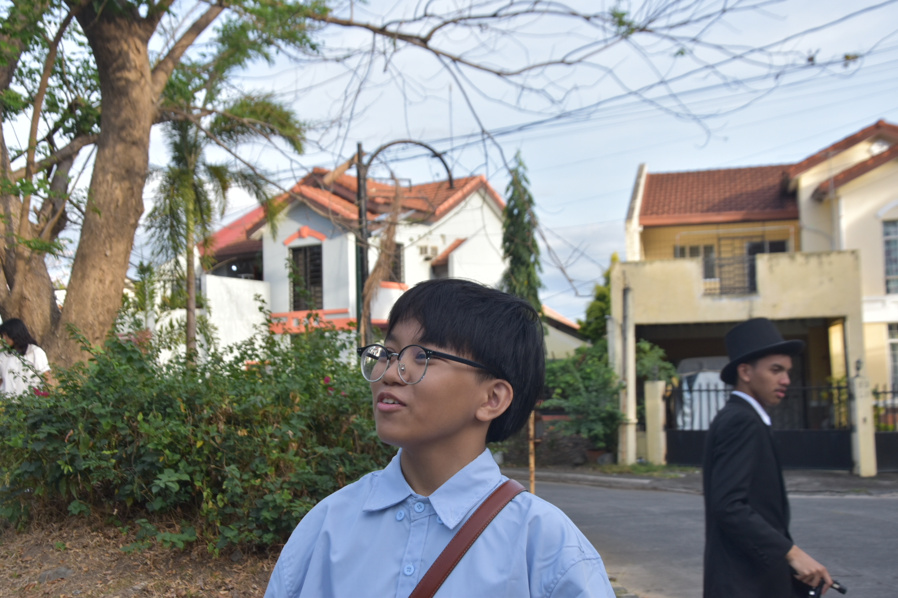
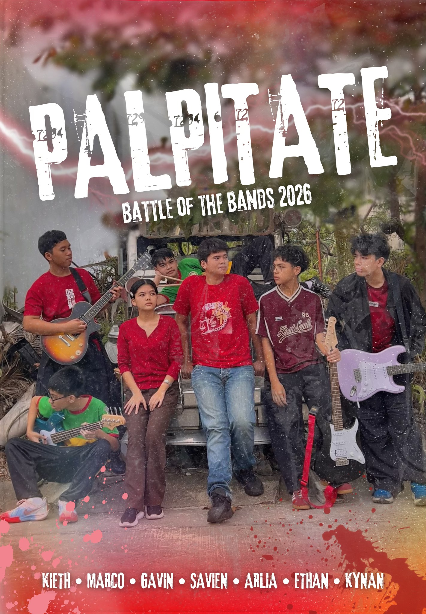
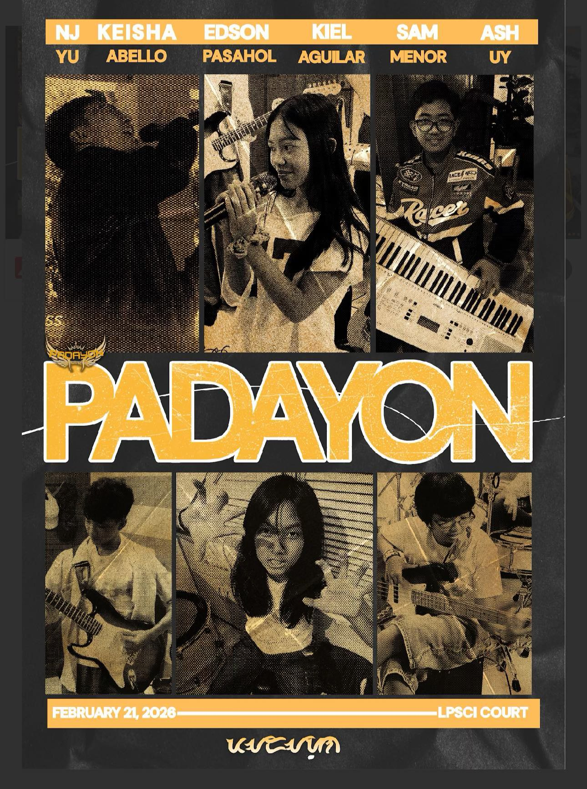
🍎 Miting de Avance
Attending the Miting de Avance was a powerful lesson in the weight of responsibility and the importance of informed leadership. Watching the candidates stand before the student body to defend their platforms made me realize that leadership isn't just about having a title; it’s about having a clear vision and the courage to be held accountable. I learned that every word spoken on that stage represents a commitment to the community, and as a student, my role is to listen critically and look beyond popularity to find genuine substance and integrity.
On a personal level, the event sparked a deeper sense of civic duty within me. It reminded me that my voice and my vote are my tools for shaping the environment I study in every day. Seeing my peers passionately advocate for change taught me that we don't have to wait until we are older to make a difference—we can start by engaging in the democratic process right here in our school. I walked away feeling more empowered to participate in student government and more mindful of the qualities I value in a leader: transparency, empathy, and a true dedication to service.
🍏 Noli Me Tangere
Watching the stage adaptation of Noli Me Tangere was a completely different experience from just reading the text. Seeing the characters come to life—hearing the emotion in Ibarra’s voice and witnessing Sisa’s heartbreak in person—made the "social cancer" Rizal wrote about feel incredibly urgent and real. I learned that storytelling through performance has a unique power to bridge the gap between history and the present, turning 19th-century struggles into a living mirror of the injustices we still see in society today.
On a personal level, the play moved me to think about my own role as a spectator in the world. It’s easy to feel detached when reading a book, but sitting in the theater, I felt the collective weight of our national history. It taught me that courage and sacrifice aren't just grand concepts; they are found in the difficult choices individuals make for the sake of their loved ones and their country. I left the theater feeling a deeper connection to my roots and a stronger conviction that we must never stay silent in the face of truth, no matter how uncomfortable it might be.
🔬 Mapeh Month
Participating in MAPEH Month was a vibrant reminder that being a student is about much more than just academics; it’s about holistic well-being. I learned that Music, Arts, Physical Education, and Health are not just separate subjects, but interconnected pieces of a healthy and expressive life. Whether we were practicing a dance routine, creating a poster, or discussing community health, the event taught me that creativity and physical fitness are just as essential for my development as logic and equations. It made me realize that taking care of my body and nurturing my artistic side are vital responsibilities I owe to myself.
On a personal level, the month’s activities—especially the "Ani ng Sining" celebrations—pushed me out of my comfort zone and taught me the value of discipline and cultural pride. Working with my classmates on performances and projects reminded me that teamwork is the heartbeat of any successful creative endeavor. I walked away with a deeper appreciation for our Filipino heritage and a stronger commitment to maintaining a balanced lifestyle. I’ve learned that when I move my body and express my thoughts through art, I’m not just "doing an activity"—I’m building the confidence and resilience I need to face any challenge.